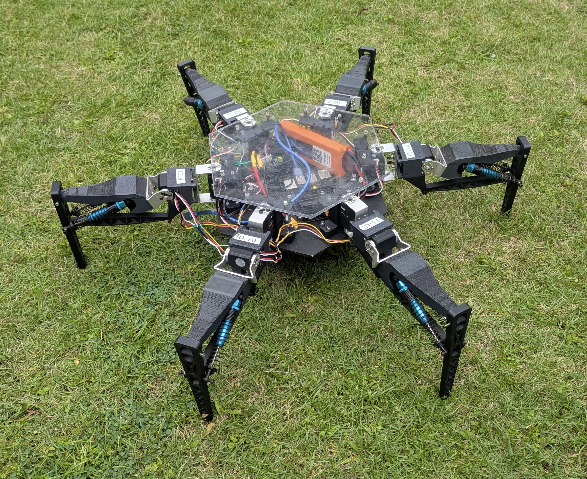

Open-source hexapod platform
Spring-assisted 2-DOF legs for energy-efficient locomotion.
This platform uses a passive spring-assisted four-bar leg mechanism to support body weight mechanically, reducing standing power while keeping the robot low-cost, manufacturable, and suitable for reinforcement-learning locomotion research.
The robot is validated in simulation and hardware on flat ground, rough terrain, slopes, and payload-carrying trials, with training and deployment code built on mjlab.
Highlights
Designed for accessible, energy-aware legged robotics research.
Mechanism
Passive support without giving up terrain locomotion.
The leg design trades the conventional third actuated degree of freedom for a spring-loaded parallel linkage. The mechanism is represented in MuJoCo using equality constraints and tendon springs, while the learned policy controls the two actuated joints on each leg.
Locomotion
Simulation and hardware trials across terrain conditions.
Flat Terrain · Sim
Flat Terrain · Hardware
Rough Terrain · Sim
Rough Terrain · Hardware
Slope · Sim
Slope · Hardware
Interactive Demo
Browser-based MuJoCo viewer.
This mjswan demo loads the Spiderbot MuJoCo model and a flat-ground locomotion policy directly in the browser for lightweight interactive teleoperation.
Interactive Demo
Open full viewerPayload
Passive compensation under additional load.
Payload trials evaluate whether the spring-assisted leg design maintains its energy efficiency advantage when the platform carries additional mass.
Maximum payload trial
3.75 kg · 1.25x robot weight
Citation
BibTeX
@misc{spiderbot2026,
title = {Design and Development of an Open-Source Energy-Efficient Hexapod Research Platform},
author = {Sharma, Ritwik and Agrawal, Saransh and Shah, Vimarsh},
year = {2026},
note = {To appear}
}